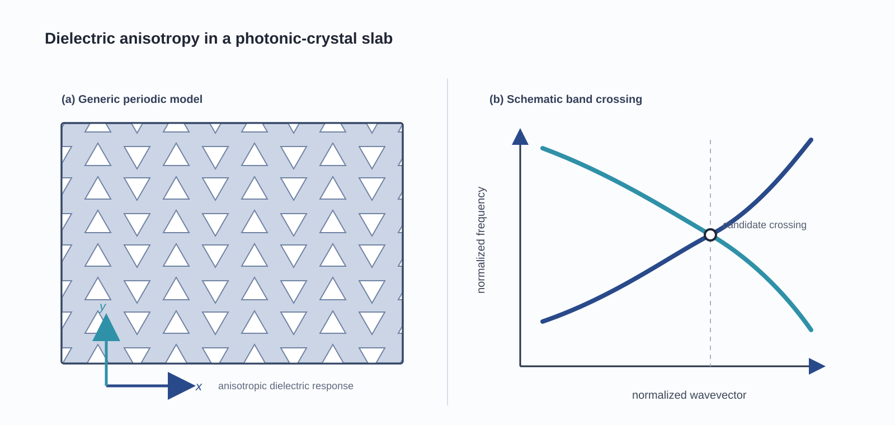

Anisotropy Control of Dirac Cones in 3D Photonic-Crystal Slabs
Undergraduate Researcher · Prof. Jingwen Ma’s Group, SUSTech ↗
This project examines how material anisotropy governs the formation, migration, tilting, gap opening, and modal coupling of Dirac cones in three-dimensional photonic-crystal slabs.
My contribution
Built FDTD models and Python/LSF automated parameter sweeps for anisotropic dielectric tensors; extracted band structures, located Dirac points, quantified cone tilt, and analyzed two-dimensional momentum-space dispersions and modal fields.
Photonic crystalsFDTD simulationBand-structure analysisDirac cones
